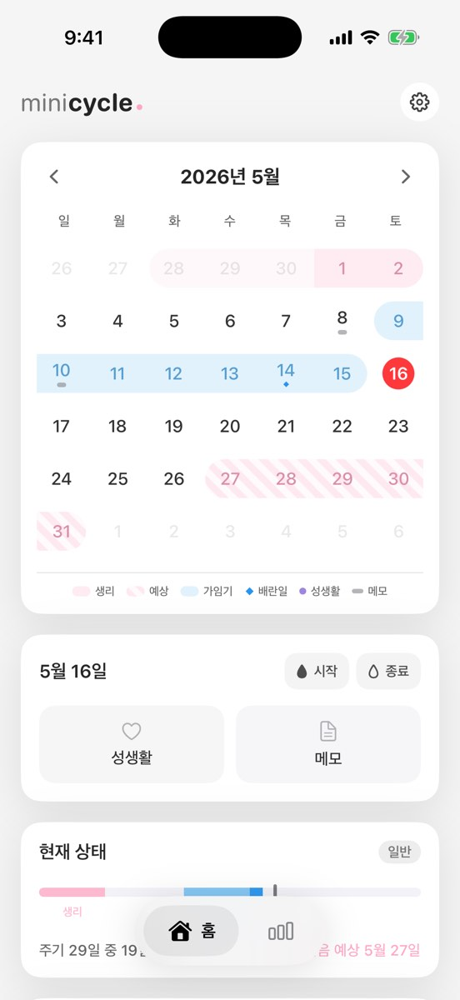

위젯
아이폰 홈 화면 생리 캘린더 위젯에는 무엇이 보여야 할까요
위젯은 앱 전체를 작게 줄인 화면이 아니라, 오늘 주기 상태를 빠르게 답하는 화면이어야 합니다.

한눈에 읽히는 정보
Apple은 위젯을 시기적절한 정보를 보여주는 집중된 표면으로 설명합니다. MiniCycle도 현재 주기 상태, 작은 달력, 예상 생리일, 가임기 표시를 중심으로 구성합니다.
덜 보여주는 이유
정보가 많은 건강 위젯은 읽기 어렵고 홈 화면에서 민감한 내용을 노출할 수 있습니다. MiniCycle은 메모와 편집은 앱 안에 두고, 위젯은 확인용으로 유지합니다.
같은 계산 로직
앱 캘린더와 위젯은 같은 예측 로직을 사용합니다. 두 화면의 날짜가 다르면 신뢰가 빠르게 떨어지기 때문입니다.